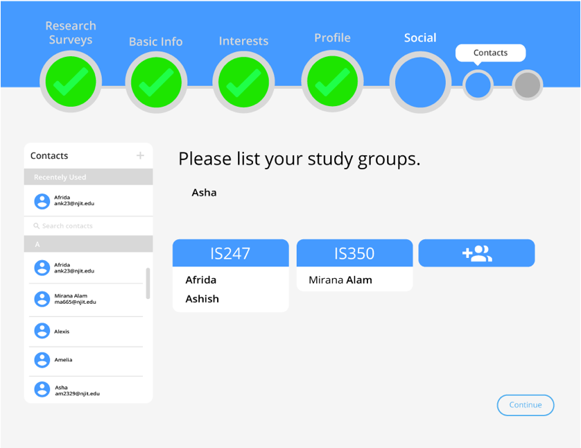
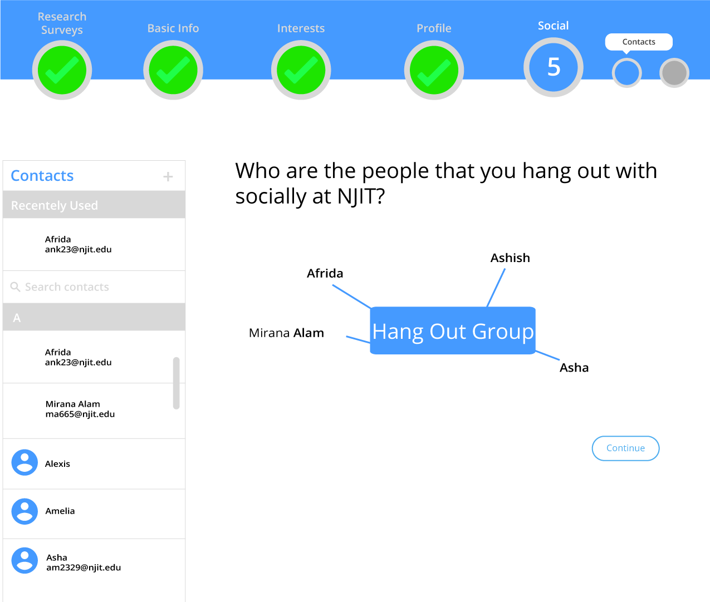
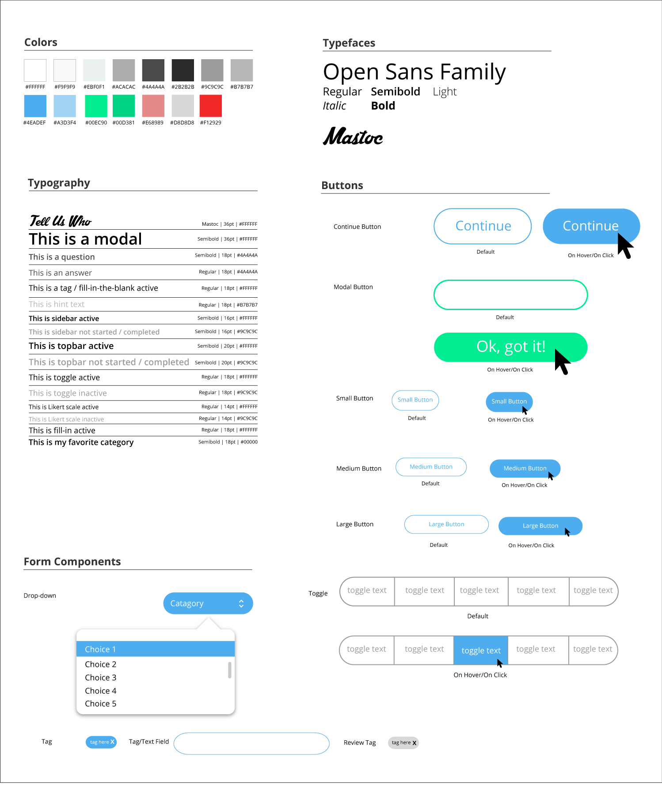

telluswho
telluswho is a social network survey tool that creates profiles for students, rich in data on their background, school, and work information, as well as their favorite interests and activities. Telluswho also collects their contacts so we can see who they do activities with and how their social networks at NJIT change over time.
This study is conducted under the supervision of Dr. Quentin Jones and is the basis for my Undergraduate Research Thesis.
My Roles : UX Designer and Researcher, Project Manager
The Problems:
- How can we successfully collect student's activities and interests?
- How can we make a long survey fun?
- How can we visualize student's social networks?
This was the hardest part of telluswho and has underwent many revisions. The main problem is that there are just too many things that people like! When we first started designing this page, we decided to give example categories, i.e movies, music, books but quickly found that students did not think outside the categories we provided.
Telluswho is a long survey and we know that students do NOT like taking long and boring surveys. We decided to add fun interactive components to telluswho so students would want to continue taking it.
From prior research we know that that students organize their social networks into groups based on who they do activities with. We needed to design a way for the user to group their existing contacts in a meaningful way that made sense to them.
The Solutions:
We decided to use Axure RP to create a basic flow of the survey. Axure enabled us to define basic survey interactions that would be used throughout telluswho. Our survey asked many different types of questions that required different styles of response input. Some required one answer, some multiple answers, some had multi-select text boxes, and some had drop down selection.
Check out our survey design patterns here
During this stage we went through many iterations of the interest and activities section. We first decided to use a tagging system inspired by“Tumblr” to collect user’s interests. We also gave the user a short fixed-list of basic interest categories. I conducted user testing once we had a working prototype in Axure. We recruited two participants for a think-aloud protocol and discovered that the basic interest categories were too overwhelming. Just seeing the word “music” could mean so many different things (artists? genres? concerts? instruments?) and the participants did not even know where to begin.
Check out some of my user testing notes here
Back to the drawing board!
We decided to utilize fill-in-the-blank style questions and gave the user a plethora of categories to choose from. Our inspiration for this interaction style originated from “Mad Libs”. This not only kept the user engaged, but they found the interaction simple due to the natural language used. Each interest category now has subcategories that probe the user into giving us the real “meat and potatoes” of their favorite interests. You can see a video of the prototype below.

We also added drag and drop components to keep the survey fun and the user engaged. This also allowed for the user to complete lengthy tasks in significantly less time.

We used drag and drop components for the social network section of telluswho as well. We knew we wanted to use prior social network desktop surveys for inspiration, such as Vizster and ContactMap. However, Vizster was too data driven and ContactMap needed to be brought into the year 2017. It took a few iterations to find a happy medium. We used drag and drop to link their contacts to the activities they gave us previously in the survey. Below are some design iterations we did.



Style Guide

Telluswho is currently in development and will be piloted in August 2017. Check out our Invision here for current designs which I made in Adobe Illustrator and Sketch.